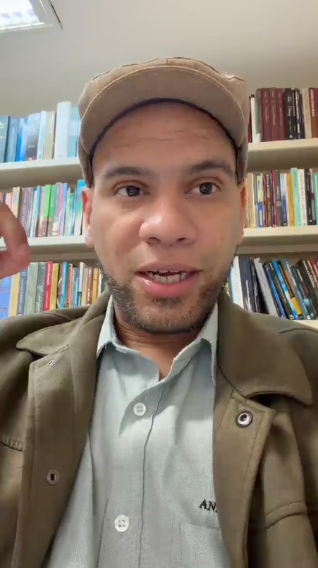
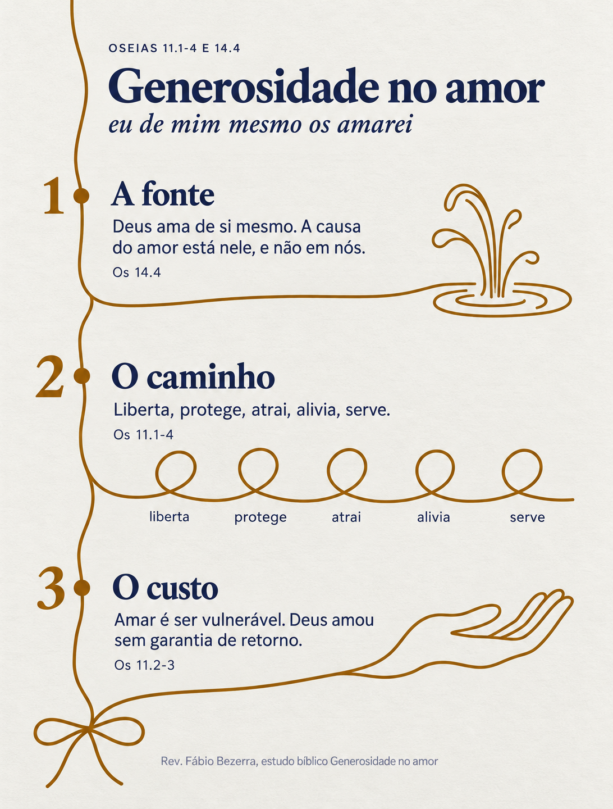
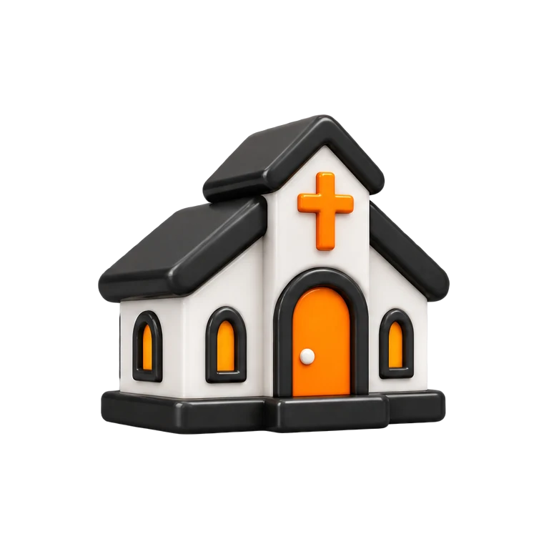
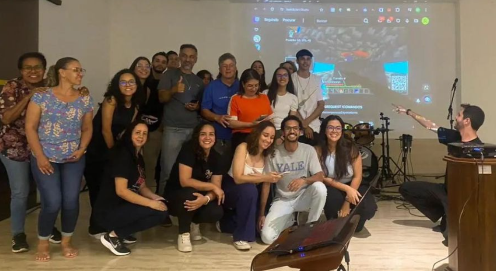
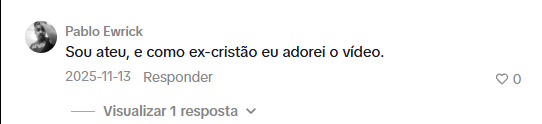
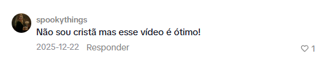
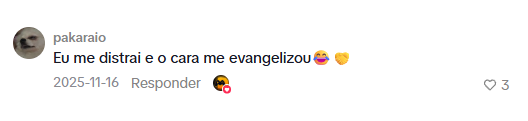
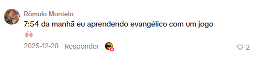
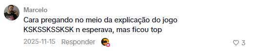

Comunicação pastoral na era das mídias digitais

ao vivo1 de 3
“A lógica das redes é muito desafiadora.”
“Se você deseja crescer nas redes sociais, ela demanda que você publique várias vezes por dia.”
“Corre o risco de trocar as prioridades, focando energia na internet do que no serviço da igreja local.”
3 cortes, cada um com uma mensagem completa
Jesus me ama
O guarda que pediu perdão
O fardo que ele tira
0 postagens
Estudo para os pequenos grupos
enviado às lideranças

Resumo da mensagem
nos stories e no grupo de avisos quando o culto acaba
automático
suaigreja•••
1/8
suaigreja Quase todo amor que a gente conhece cobra alguma coisa em troca...
Para quem ainda não conhece Jesus
O pastor continua focado naquilo para que foi chamado:
Pregar.
E agora usa a internet como praça pública do seu ministério.
Todo pastor deveria fazer isso.
Mas a quem isso alcança?
e não estão procurando ouvir sobre ele
Como missionário de tempo integral, meu foco está aqui.
Comunicar o Evangelho na internet a quem não está procurando ouvir, até levar essa pessoa a uma igreja local na cidade dela.

Gank EvangelísticoNínive DigitalConteúdo com jogos
Gank Evangelístico
ao vivo4 assistindo
gente, o que tá acontecendo aqui?
no chatSomos uma igreja. Estamos aqui porque amamos Jesus e queremos falar dele com você.

Nínive Digital
Rev. Átiladepoimento do segundo dia de jogo
0:00 / 1:01
Conteúdo evangelístico com jogos
0mil visualizações, Blasphemous
- 24,4 milcurtidas
- 306comentários
- 3.903salvamentos
- 2.929compartilhamentos
0mil visualizações, Hollow Knight





Grupo no WhatsApppara aprofundar a conversa
Obrigado
Bruno & Navarro